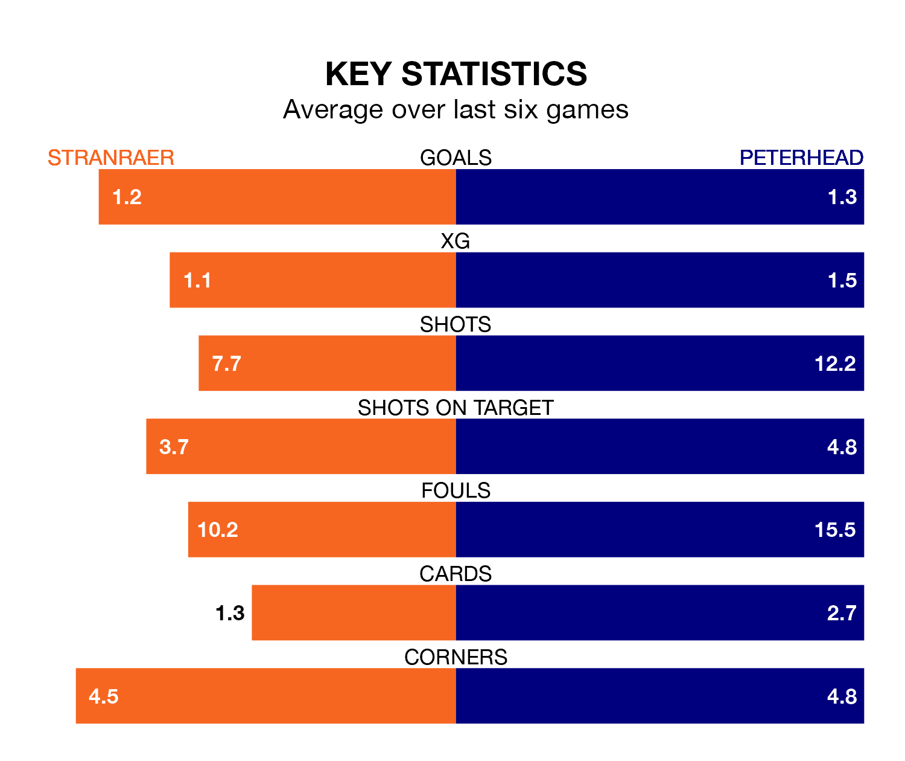

Mid-season relegation candidates Stranraer face a challenge against high-flying Peterhead at Stair Park on Saturday.
Stranraer are seventh in the League Two table, and have picked up five wins and four draws in their 18 games to date.
The Blue Toon, meanwhile, are second in the standings with 35 points, having won 11 and drawn two of their first 19 matches, and are 11 points behind table-toppers Stenhousemuir.
With 33 goals in 19 games so far this season, Peterhead are the league's joint-second-highest scorers with 1.7 goals per game. And they are conceding fewer than average, letting in 19 goals at a rate of 1.0 per game.
Stranraer, meanwhile, are below average scorers, with 1.2 goals per game, compared to a league average of 1.4. They have conceded 2.1 goals per game.
In the last 10 years, Stranraer and Peterhead have played each other on 16 occasions. They won six each, and they drew four times.
On average, Stranraer scored 1.6 goals and the Blue Toon 1.8 in those matches.
Their last meeting was on November 11, when Peterhead won 3-2 at home.
The home team are in disappointing form in League Two, with one win and two draws from their last six games.
With two wins and a draw over that period, the Blue Toon's form is slightly better – they have taken seven points from 18, compared to Stranraer's five.
In Conor O’Keefe and Kieran Shanks, the visitors have two of the league's sharpest shooters so far this season. They have notched six goals each, to sit fifth in the scoring charts.
Stranraer's top scorer, with four goals in 18 games, is James Dolan.
Stranraer's last match was on January 6, a 2-1 loss against Elgin City, with Deryn Lang getting the goal for Stranraer.
Peterhead beat Dumbarton 3-1 last time out, on Tuesday, with Rory McAllister (two) and Jack Brown on the scoresheet.
Updated: 10:50, 10/01/24